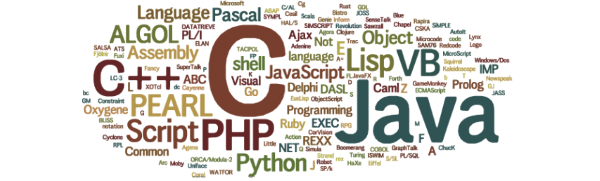

Introduction
A programming language is a way to express instructions that a computer can execute. Programmers use languages to create software including websites, mobile applications, games, and operating systems.
Different programming languages provide different rules for how instructions are written, data is organized, and programs function. Each language has its own strengths and weaknesses depending on the purpose.
This website introduces three widely used programming languages: Python, JavaScript, and Java. Each page explains a language's characteristics and common uses.
Python
Python is known for its readable syntax and is commonly used for automation, data analysis, and artificial intelligence.
Learn MoreJavaScript
JavaScript is used to create interactive websites and develop both frontend and backend applications.
Learn MoreJava
Java is an object-oriented programming language commonly used for enterprise software and application development.
Learn More